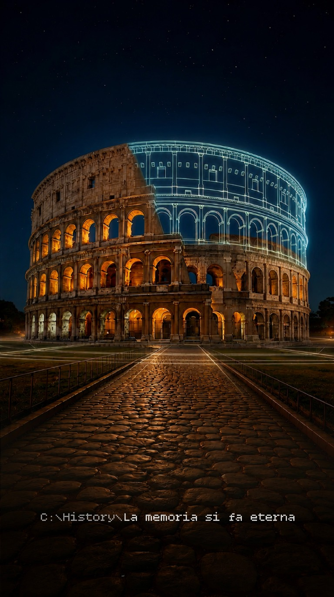

Seconda classificata · IGPDecaux Graphic Award 2026
Roma
città eterna
Un manifesto digitale sul dialogo tra memoria, immaginazione e intelligenza artificiale.
Esplora il progetto
La memoria
si fa eterna.
La memoria non è custodita soltanto nei monumenti: continua a vivere ogni volta che Roma viene osservata, raccontata e reinterpretata. Anche il tempo può sottrarre parti della storia, ma l’immaginazione può restituire una nuova forma a ciò che non è più visibile.
Il Colosseo diventa il protagonista di un dialogo tra passato e futuro. La pietra conserva il peso della storia; una trama di linee luminose ricostruisce la parte mancante, trasformando l’assenza in una nuova possibilità di racconto.
L’intelligenza artificiale non sostituisce l’originale: suggerisce una visione contemporanea, in cui tecnologia e immaginazione rendono il patrimonio accessibile a uno sguardo nuovo.
Dentro il progetto
Quattro momenti.
Una memoria.
Presentazione · 12 slide